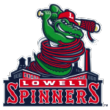

|
|
|  |
Lowell Narrowly Wins Stedler Division Monday, September 7th, 2020 Fans of the Lowell Spinners have a lot to get excited about, as the club has captured the Stedler Division crown. It's the 1st time in franchise history that the club has finished atop the standings and they now have an opportunity to capture the franchise's 1st New York-Penn League championship. Manager Luke Montz said there's "a lot of excitement" in Lowell over the club right now and they hope to live up to expectations. For his part, closer Joan Martinez said the division championship is "just a start" for his team. "We want to go all the way, win the Round 2," he said. "Winning the division - we could get used to this." |


|